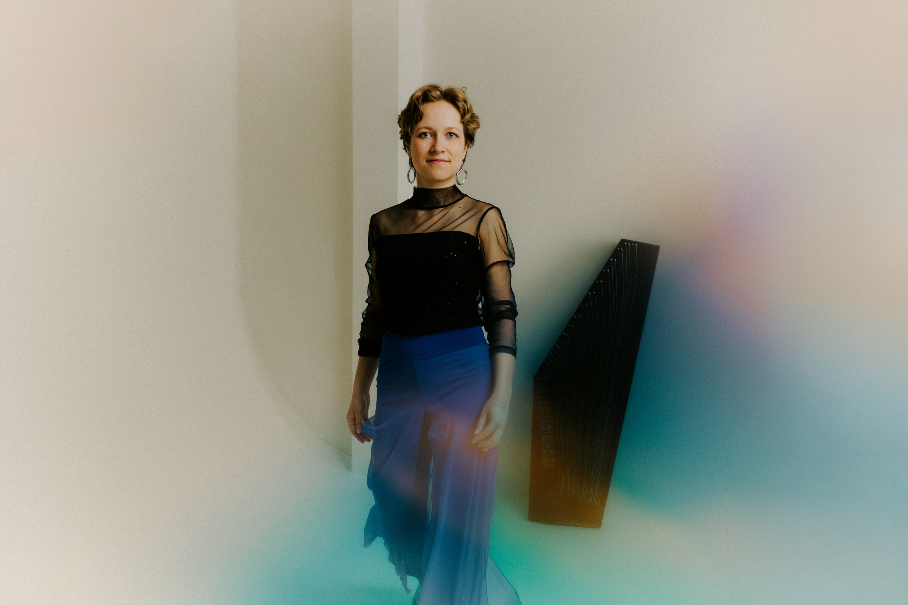

Aktuell
Gleich zwei Interviews sind auf Deutschlandfunk Kultur online — jetzt anhören: zur Sendung „Einstand“ und „Piano Phase“.

Gleich zwei Interviews sind auf Deutschlandfunk Kultur online — jetzt anhören: zur Sendung „Einstand“ und „Piano Phase“.